This project pulls together lines of enquiry around AI, authorship and labour, into an ongoing experiment. As the realities of the landscape I operate within change, the questions change their shape. Using AI-assisted tools, the project explores how creative practice and livelihood adjust within environments increasingly ruled by automation.
Our understanding of the societal impacts of artificial intelligence shifts and morphs as its reach weaves further into daily life. The boundaries of human endeavour blur, and new realities are swiftly normalised as our capacity for production accelerates. In much the same way as during the COVID crisis, what once felt extraordinary becomes absorbed into our sense of the everyday.
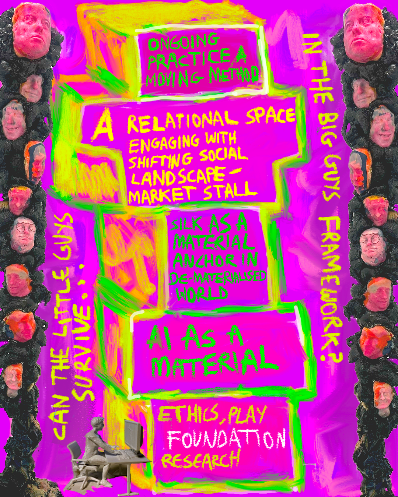
In October 2024, as the implications of rapidly advancing technology and the looming threat of mass job losses gathered like a dark cloud, they were eclipsed by another crisis: the world edging towards the tipping point of climate collapse. Governments pressed on with policies that protected opaque data sets and corporate interests, trading democratic accountability for economic leverage, while the atrocities of war filled the headlines.
The UK’s Data (Use and Access) Bill, debated throughout 2024, exemplified this shift. As the legislation moved through Parliament, the House of Lords repeatedly pushed back against government attempts to weaken safeguards on transparency and data use. Despite sustained criticism from artists, rights groups and peers, the government insisted on prioritising “innovation” and “growth”, framing these as national imperatives. By the time the Bill became the Data (Use and Access) Act in mid-2025, key amendments that would have required AI companies to disclose copyrighted material used in training had been stripped out, leaving creative labour further obscured within vast private datasets.
I began to wonder what it would mean as an individual to play by the same rules as the larger companies. Whether it might be possible to re-frame this new reality into something workable, and if it’s possible. Individuals suddenly had a new agency, a supercharged capacity for production that opened extraordinary possibilities.
Working from the recognition that, through the accessibility of technology, I had acquired an augmented intelligence, and that technical skill was no longer a barrier to making, I began to construct a conceptual framework acting as a manifesto to guide my process. I wanted to build a model customised to suit my own needs that supported creative authorship and economic survival. To use this as a way of understanding the world around me and the huge changes taking place.
Toppling belief systems was reflective of what I felt about the implications AI would have on our societal landscape.
I decided to start a business selling silk scarves and hankies. I’d never seriously thought this would be possible before. I’d always been busy doing other things, mainly learning and using software to make adverts to sell stuff to people through the intermediary of screens. I really liked the idea of creatively directing fabric designs to put on scarves and hankies and selling them in person to people from a market stall as well as online.
Using my own artwork as a starting point, I began generating designs. It was a process of much back and forth, sometimes using two images as prompts simultaneously, sometimes feeding generations back in as new starting points. I arrived at a collection of 10 core designs. The foundation image running through the collection is shown below. Its messiness becoming a kind of visual signature across the designs.

Next came finding suppliers. I turned to Alibaba and suddenly I was connected to a 24/7 global marketplace, a seemingly endless list of intermediaries for manufacturers, eager to negotiate through an app on my phone. Responses to any question came back immediately, at what would have been the early hours of the morning for them. I wondered if I was talking to bots. My order was tiny: 15 hankies per supplier. This was before AI agents had been launched to replace these workers entirely.
There is something worth noting here. The West tends to use China as a convenient scapegoat for a lack of regulation and safeguards around AI, yet China has kept its technology largely state-controlled, meaning any labour savings from automation would flow back to the state. That arguably puts them in a far stronger position to redistribute wealth were 90% of jobs to become automated.
The working condition of the human agents concerned me, as did the unknown quantity of the supply chain involved in making them. I needed to be sure the scarves were being made under ethical conditions, both workforce and environmentally. I used an LLM to establish which certifications I needed — OEKO-TEX, GOTS, fair labour standards — and what questions to ask. It was a strange kind of due diligence, using one contested technology to interrogate the ethics of another global system.
I trialled three suppliers through Alibaba on small batch orders of scarves and hankies. Each was a leap of faith — money sent across borders to people I’d never meet, trusting that what arrived would be what was agreed. Eventually, with the LLM’s help filtering and comparing, I settled on a larger manufacturer able to fulfil low minimum order quantities while holding all the certifications I needed.
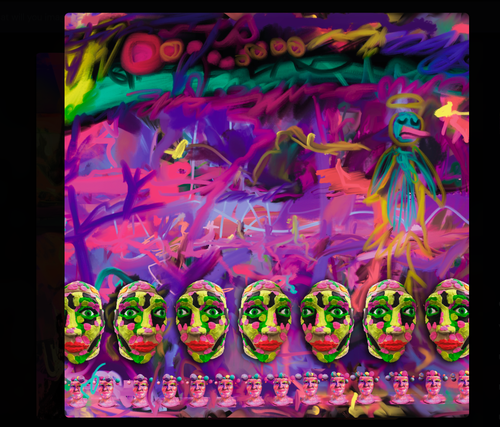
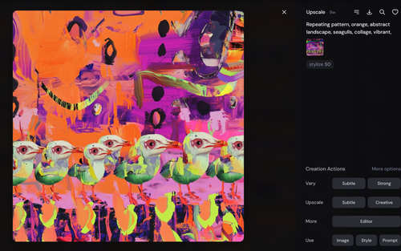
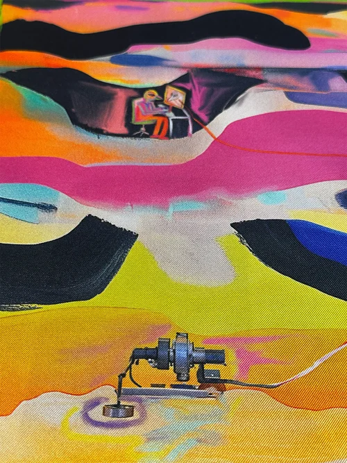
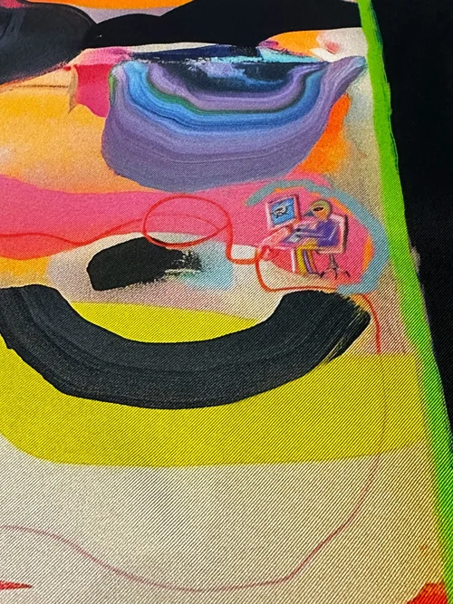
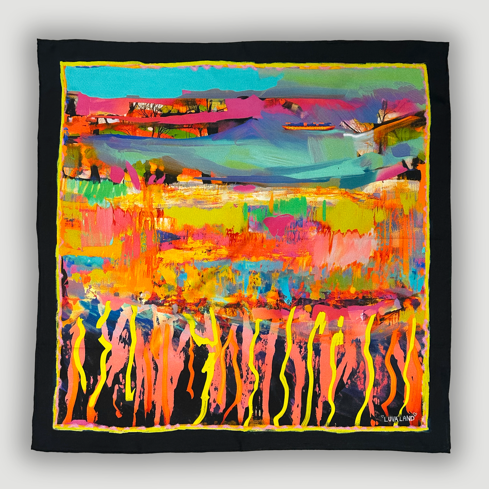
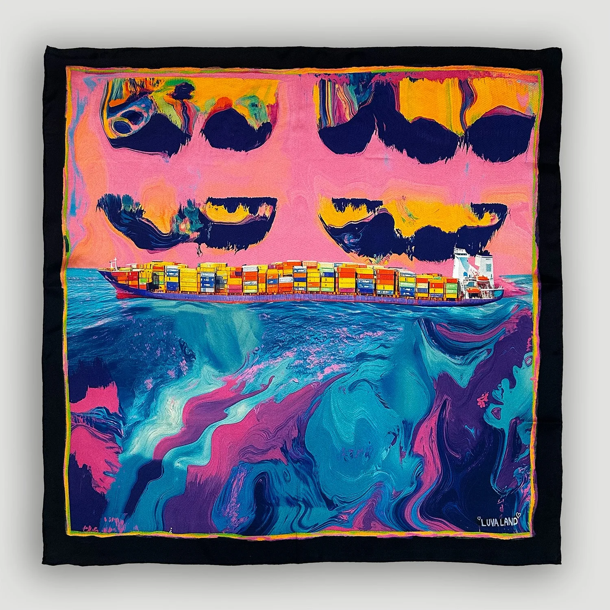
Similarly to the history of silk itself, market stalls are a timeless manifestation of trade and human connection. While high streets have been steamrolled by global chains — M&S, H&M, Zara — adorning the bodies of people across the globe, markets remain a place of direct engagement between people and what they buy, a simple transaction with a human on the other side of it. In asking whether AI can genuinely benefit individuals rather than just big business, I’m aware of the reality of every aspect of the supply chain pipelines I navigated to get here will soon be reshaped by automation, automated beyond recognition.
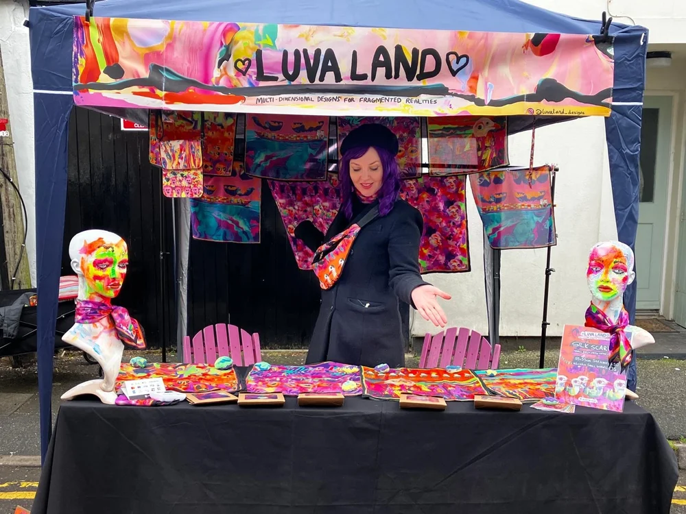
As well as existing in physical space — realistically to utilise the technology playing by the same rules as large organisations and turn a profit — I needed to exist online. As I’m not a craft business, just selling silk scarves didn’t feel it worked. I felt I needed to diversify my range. I decided to sell a dress to accompany each scarf design. With the help of GPT I found a site in China that had a wide array of blank garments that allowed me to design onto them and order single garments which I could later drop ship.
The dresses arrived, I was really pleased with the way the designs had turned out. I did a fashion shoot at the Brighton University, using myself as the model, then using AI software I replaced my identity with the AI model. This was remarkably easy to do. As I exchanged myself with a more commercially viable simulacrum, it felt symbolic not just of the erasure of my human identity being replaced with AI but also an entire industry of models, and production teams erased. It’s difficult to describe the magnitude of how startling the ease of this was to do. Through my experiment as the landscape shifted around me in real time it was like looking at the entire replacement of an old system into something new.
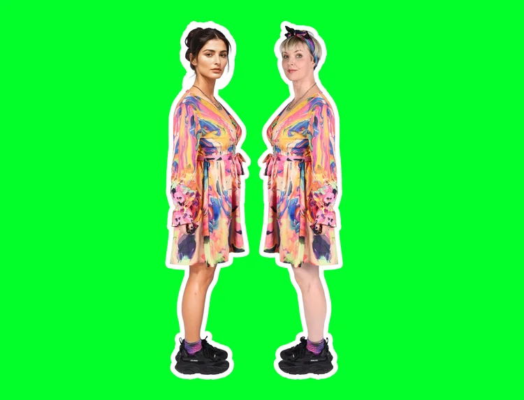
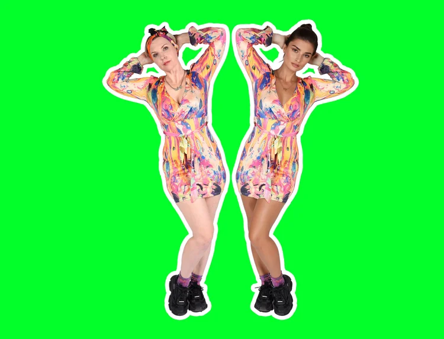
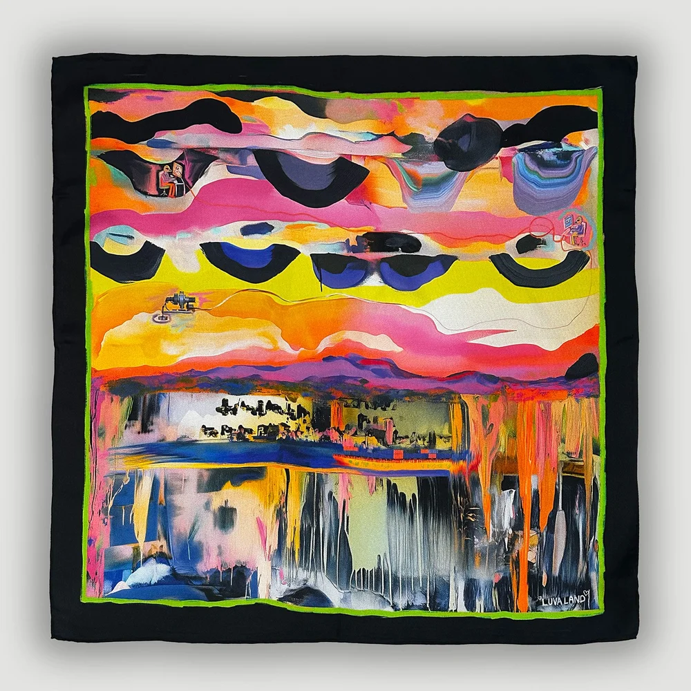
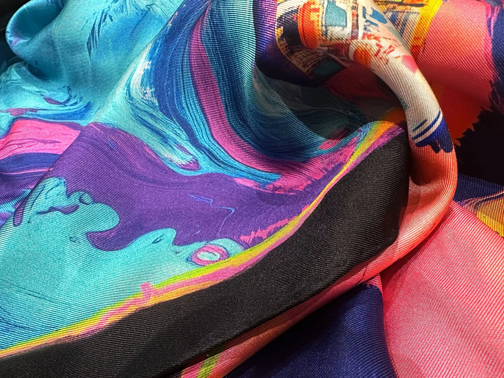
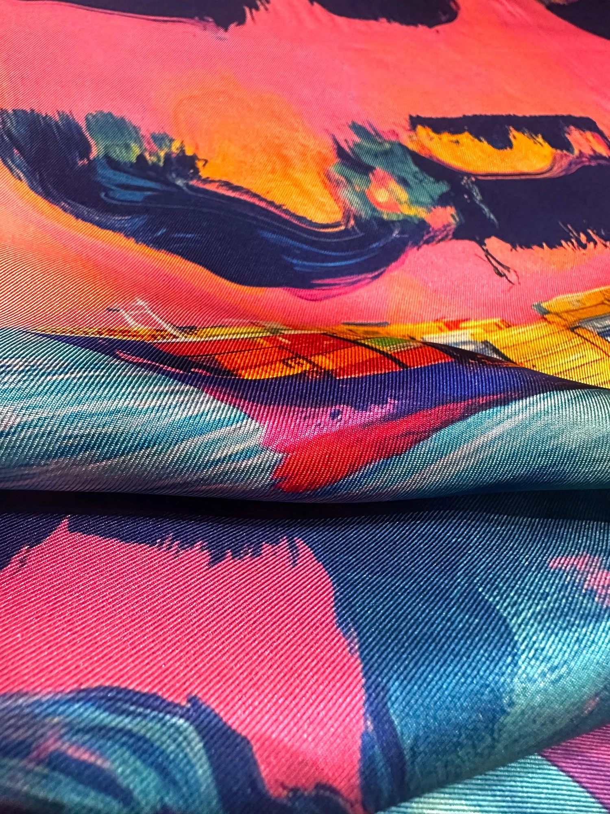